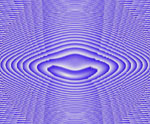

呂清夫 撰文

一般相信，繼十八世紀後半的工業革命之後，第二次世界大戰後出現的技術革命應屬第二次工業革命。第一工業革命解決了人類的勞力問題，亦即由機的勞動；相對的，第二次工業革命則解決了人類的勞心問題，亦即電腦或自動化裝置代替了神經的勞動。由於電腦在當代社會中扮演了極重要的角色，所以在造形創作上也注意到電腦的應用，亦即把造形作品變成一定條件之下計算而得的結果。所以計算過程變成了造形創作的方法。甚至引出了實驗藝術的新方向。在音樂、文學固然利用過電腦，平面造形、立體造形更廣泛加以利用，例如瓦沙雷利（Ｖ. Vasarely）的歐普藝術，修佛(N. Schoffer) 的「光塔」都利用過電腦。路希--史密斯(E. Lucie-Smith) 在其「二次大戰後的視覺藝術」一書中曾也說過：「電腦所發生的興趣，最後可能迫使視覺藝術家以新的方法去構思，從而延伸了他們的能力。由於將各種觀念加以分析，以備能供給資料給電腦，所以現在藝術家所進行的工作是一種更為嚴格的思想秩序，這或許是他過去習慣的想法中所沒有的。」這是電腦精確、迅速、「記性良好」帶來的結果，祇要程式設計良好，電腦便能依人們的要求，以毫無差錯的邏輯很快地產生人們期望的結果。他對於已經完成的作品之分析資料亦能儲存起來，以備將來進一步之用。具體而簡要地說，這事先將原始構想製成程式，經過一番檢討之後再輸入機器、製成磁碟，然後由繪圖機（Plotter）、或螢光幕（即陰極射線管CRT）輸出為作品，此即所謂的電腦繪圖或電腦藝術。亦即電腦藝術的製作有兩個系統，其一是運用繪圖機，使其轉動在紙上繪圖。或者使用自動的打字印刷，製作一些由文字或記號構成的圖像。其二是把電子束（beam ）打在螢光幕上，以製作期望的圖像，也可以從操作盤（console）去控制圖像。 2.電腦藝術的起源與發展商業用電腦雖在1950年即已出現，但電腦繪圖（computer graphics）一詞係於1960年由菲特(William A. Fetter)創用，當時係為波音航空公司而作，但祇限於實用的目的之上，亦即用電腦模擬飛機操縱的狀況，例如利用電腦繪圖機把飛行員在飛機著陸時所看到的滑道畫下來（圖22），以便確定飛機著陸的正確與否。他也藉著繪圖機的幫助，畫過飛行員在機艙中的各種動態，以便為機艙作最有效的配置，給飛行員以動作的最大自由（圖23）。這些作品雖然具有嚴密的科學用途，但其美學的質素仍極為明顯，故常被內入電腦藝術(computer art)的範疇。唯具象的電腦製圖(figurative computer graphics)正式使用在造形創作上則是在俄亥俄州大學教授卡斯里（C. Csuri）與程式設計師夏佛(J. Shalfer)合力創作以後，他們依循錯綜的數學手續，使其作品發揮了電腦潛在豐富的可能性，以便於圖形的修飾。因之他們在1967年「電腦與自動化」(computer and Automation)雜誌舉辦的電腦藝術競賽中獲得第一獎，得獎作品是「正弦曲線人」(Sine Curve Man，圖24)。不過這些電腦繪圖都是由線條所構成的，他的進一步發展乃是由貝爾電話研究所（Bell Telephone Labrations）的諾爾頓(K. C. Knowlton，美籍)及雪羅德(M. R. Schroeder，德籍)，他們發展出一種較寫實的「圖畫製法」（picture processing），亦即利用人像或人物的照片來製作圖形（圖25、26）。祇是電腦藝術變化多端，不一而足，除具象圖形之外，德國人尼斯(G. Nees)和涅克(F. Nake)曾基於簡單的記號要素來製作幾何圖形（圖27），尼斯又進一步製作電腦雕刻(computer sculpture，圖28)，這是把立體造形用的程式輸入電腦，把平面的設計投影在立體上，並由自動化的銑床給木材或鋁材切割出浮雕圖形。另外，如賽沖(J.P. Cittron)，懷特尼(J. Whitney)諸人又從事電腦影片(computer film，圖29)製作。懷特尼是最著名的電腦影片作者，他創作抽象影片，並曾學過音樂與電影。1966年起，他和IBM科學中心的賽沖合作無間，賽沖主要的興趣是電腦生成的音樂(computer-generated music)，因之善於為影片設計電子音樂。其實前述的各型電腦藝術家多半製作過影片，例如卡斯里教授和夏佛在1967年便合拍過十分鐘的電腦影片「蜂鳥」（Hummingbird），而且十分膾炙人口。其中他們利用蜂鳥的形象，作了最富於變化的圖形操縱，因此乃在第四屆的布魯塞爾國際實驗電影大賽(International Experimental Film Competition in Brussels)中脫穎而出。 3.電腦藝術的特點 電腦藝術炸看有著五花八門的創作表現，但是根本上則有共同的原理。一般而言，藝術創作的首務當在於作品要素（如形態、詞彙、聲音）的構成，這些要素必須遵循如下的情況，那就是他們必須可以知覺，作品要素是人可以知覺的最小單位，祇由於人的視覺與聽覺能夠接受複雜的結構如藝術作品之類，所以視覺上或聽覺上的單位變成了我們注意的對象，這個「單位」其實就是記號語言學(Semiotics)所謂的「記號」（sign）。根據法蘭克在其「電腦製圖-電腦藝術」(H.W. Frank : Computer Graphics-Computer Art)一書中的說法，人類創作一件藝術作品時，要牽涉到兩個部份，其一是記號媒介(sign carrier)預備，其二是安排(arrangment)的觀念。這兩個部份原則上是不同的。記號媒介的製作是一種物理的手續，為使之機械化，機器是需要的，例如造形家的車床、作家的打字機、音樂家的樂器均屬之。相對的，「安排的觀念」則非物理的手續，他可以是構想、意念、意象等等，這個部份無法使用過去的工業機器予以完成，祇有等到資訊機器—電腦出現，這個部份才有趨向機械化的可能，這時他成了資訊的手續，他可以透過資訊理論(information theory)而被說明清楚。這是電腦的嶄新之處，也是機器可以介入造形創作的緣由。祇是電腦藝術目前尚無定評。電腦已侵入音樂、舞蹈、具體詩(concrete poetry)、繪畫、雕刻、建築、工業設計等廣泛的領域。歐斯本(H. Osborme)認為他的美學品質應無疑問，雖然近年並無特出的造形藝術是由電腦的幫助完成，但是電腦藝術的製作與研究仍舊十分重要，因為它可以擺脫傳統藝術的特權獨佔，促成藝術的「民主化」(democratization)，這部祇在於電腦把科技與藝術的距離拉近，也在於電腦顯示了創造力未必是一種特殊的天賦，創造力也可以是一種能引進電腦程式的任意元素。更有甚者，電腦更被希望能正確地複製藝術作品，不僅促成作品的複數化及廉價化，更使藝術遺產能夠廣泛為大眾所接受，不再是私人的財產，為美的傳播開一個新的紀元。1966年在滑鐵盧大學所召開的有關電腦與設計的會議中，曾提出了兩個被視為極其自負的聲明，其一是電腦足以提高創造性作業的水平，其二是根據目前的創造性的定義，電腦可以具有創造性的要素。但是英國批評家萊哈特(J. Reihardt，在倫敦組織過著名的展覽「Cybernetic Serendipity」)則指出，這兩個聲明都是科學家提出的，關於這方面的種種實驗之有效性對造形家及其他科學家而言，仍有相當的疑問。 4.電腦藝術的評價 貝爾電話研究所的諾爾(A.M. Noll)曾做過一個有趣的實驗，他把新造形主義者蒙德里安(P. Mondrian)在1917年的黑白作品「線的構圖」(Composition with Line)細加分析，然後製作了一件面積同大、同樣由水平、垂直線構成的電腦作品。並把兩者一起向觀眾做過調查，結果發現59%的人比較喜歡電腦的作品，38%的人猜中那是電腦作品，72%的人把蒙德里安的作品視為電腦作品。這個實驗雖不能歸納出什麼論證或理論，但是諾爾深深覺得，藝術與電腦間的可能性仍處於極為初步的階段。歐斯本更具體的說:「螢光幕(CRT)乃是最具伸縮性的方法﹐因為在製作過程中﹐它讓藝術家介入並操縱意象的時後﹐有如行動繪畫(Action Painting﹐如帕洛克的作品屬之)一般。使用繪圖機的時候﹐則又如同某種的機動藝術或如某些由數學公式產生的具體藝術(Concrete art)一般﹐雖然﹐偶然的因素可能被有計劃地導入﹐但是藝術家的活動仍被侷限於事先的程式設計之中。」(註10)亦即電腦藝術可像行動繪畫般的自由﹐亦可像具體藝術般的嚴肅。電腦藝術若從純藝術的角度看來﹐顯然仍有不足之處﹐但是若從廣泛的造形角度看來﹐它毋寧是一種嶄新的表現途徑﹐同時由於電腦的潛在可能性尚有發揮的餘地﹐並由於電腦闡明了藝術、技術、科學的相互作用﹐所以它具有過去的表現媒體所沒有的特點﹐並可能為造形藝術帶來新的質素(圖33)。